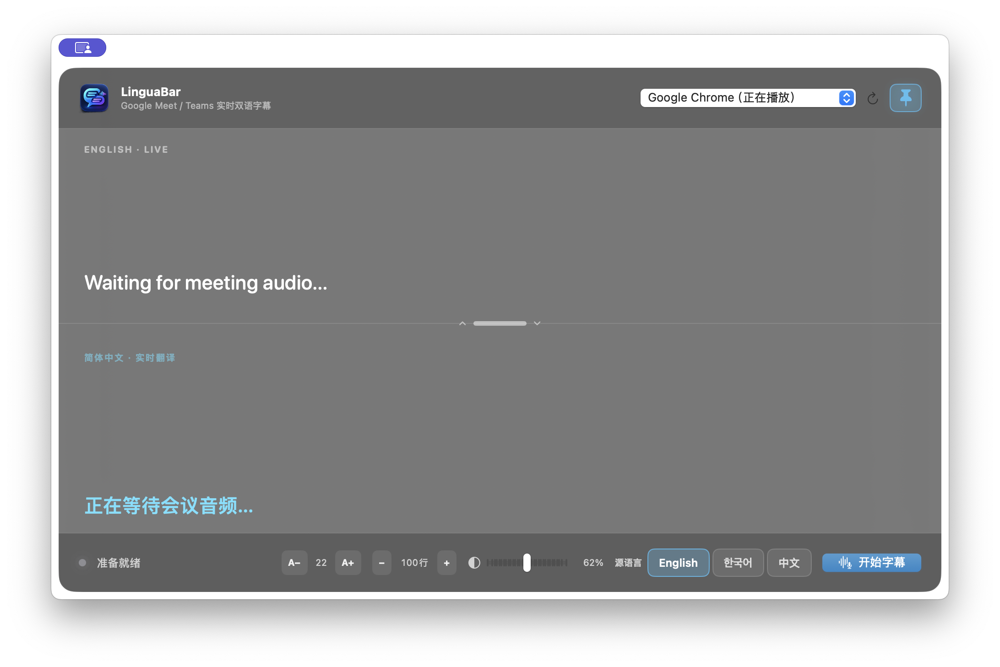

原文与中文，一起看Both sides of every sentence
英文、韩文实时转写并翻译成中文。选择中文输入时，只保留转写，让阅读更直接。
Transcribe English or Korean and read the Chinese translation below. Choose Chinese input for a clean, transcript-only view.
听原声，看中文。LinguaBar 将 Mac 上的会议音频转成实时双语字幕，让你少一点语言障碍，多一点专注。
Listen to the original. Read it in Chinese. LinguaBar turns meeting audio on your Mac into live bilingual captions, so you can focus on the conversation.
v0.2.2 · macOS 15+ · Apple Silicon (M1+)
Let's make sure everyone
is on the same page.
让我们确保每个人
都达成共识。
字幕排版示意 · 示例文本，非真实会议或运行截图Caption illustration · Sample text, not a live app screenshot
听你已经在用的会议工具For the tools you already use
A LITTLE MORE UNDERSTANDING
不是另一个会议平台，而是留在你身边的一扇小窗口。无需虚拟声卡，也无需第三方 AI API Key。
Not another meeting platform. Just a native window beside the one you use. No virtual audio driver or third-party AI API key required.
英文、韩文实时转写并翻译成中文。选择中文输入时，只保留转写，让阅读更直接。
Transcribe English or Korean and read the Chinese translation below. Choose Chinese input for a clean, transcript-only view.
拖动双语分隔条，调整字号和背景透明度。需要时置顶，下次启动记住你的语言与音频源。
Resize the split, adjust type size and background opacity, or pin the window. Your language and audio preferences return next time.
屏幕默认保留最近 100 个语义行与十分钟内容。停止监听后，完整原文和中文译文自动存到文稿/LinguaBar；中文输入仅保存原文。
Keep the latest 100 semantic lines and ten minutes on screen. Stop listening to save the complete source and Chinese translation to Documents/LinguaBar. Chinese input saves the original only.
SwiftUI · Core Audio · Apple Speech · Translation

READY WHEN YOU ARE
打开 DMG，把 LinguaBar 拖进应用程序。当前版本适用于 macOS 15+ 的 Apple Silicon Mac。
Open the DMG and drag LinguaBar into Applications. This release supports Apple Silicon Macs running macOS 15 or later.
打开 Meet、Chrome 或 Teams，选择音频源与 English、한국어 或中文。默认优先 Google Meet。
Open Meet, Chrome or Teams. Choose the audio source and English, Korean or Chinese. Google Meet is preferred by default.
允许 macOS 的语音识别与系统音频录制权限。首次翻译可能需要下载语言包。
Allow macOS Speech Recognition and system audio recording. Translation may need a language download on first use.
GOOD TO KNOW
不保证完全离线。转写使用 Apple Speech，可能根据语言与系统支持使用苹果服务器。翻译使用 Apple Translation 设备端模型，首次可能下载资源。App 不保存录音，但停止监听后会将完整原文和所需中文译文保存至文稿/LinguaBar；清屏与十分钟显示过期不会删除这些文件。若文稿已开启云同步，归档也可能同步，请按会议隐私要求自行保管或删除。
Offline recognition is not forced: Apple Speech may use Apple's servers. Translation uses on-device Apple models, with initial downloads when needed. No audio recording is saved. Stopping saves the full transcript and required Chinese translation to Documents/LinguaBar; clearing the screen and display expiry do not delete these files. Archives may sync if Documents is cloud-synced. Manage or delete them according to your meeting privacy requirements.
不是。Chrome 中的 Meet 使用 Chrome 进程树音频，其他标签页的声音也可能被捕获。请按需暂停其他网页音频；切换来源或语言前先停止字幕。
No. Meet in Chrome uses the Chrome process tree, so audio from other tabs may also be captured. Pause other browser audio when needed. Stop captions before switching sources or languages.
当前发行包为 Apple Silicon（M1 及以后），需要 macOS 15+；尚未包含或验证 Intel 版本。识别支持英文、韩文、中文；翻译目标为简体中文。当前 App 界面为中文，项目文档为中英文。
The binary targets Apple Silicon (M1 and later) with macOS 15+. Intel is not included or validated. Recognition supports English, Korean and Chinese; translation targets Simplified Chinese. The app UI is Chinese, with bilingual documentation.
这是一个早期预览版，识别质量与标点受音频和系统能力影响。欢迎在 GitHub 提交 Issue 或贡献代码。请勿在公开 Issue 中上传私人会议录音、字幕或密钥。
This is an early preview. Audio quality and system capabilities affect recognition and punctuation. Issues and code contributions are welcome on GitHub. Please keep private meeting audio, transcripts and credentials out of public issues.
macOS 15+ · Apple Silicon · v0.2.2